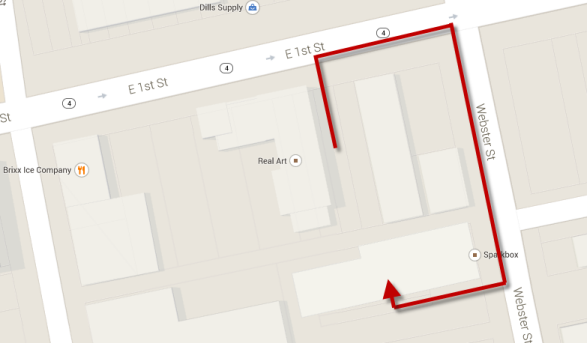
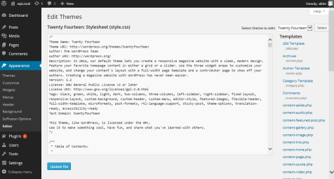
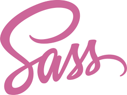

Exploring WordPress Workflows
Before Getting Started...
Did you know...
There are three additional meetup's just around the corner...
Dayton Web Developers
meetup.com/dayton-web-developers
Meet the 1st Wednesday of the month @6pm.
Next meeting: Scalable Vector Graphics with Marc Grabanski of Frontend Masters
Dayton Clean Coders
Meet the 3rd Tuesday of the
month 11:30am - 12:30pm
Dayton Clean Coders is a monthly meetup of developers who have a desire to share, practice and contribute to clean code.
GemCityJS
Meet the 3rd Thursday of the
month 11:30am - 12:30pm
Gem City JS is a meetup of web developers who share a desire to share and learn more about JavaScript.
Nov 20, 2014 - Bring Fun Back to JS: Step-by-Step Refactoring Toward Ember with Brandon Hays
Southwest Ohio GiveCamp
Every October, technical professionals meet at Miami University, Voice of America Campus to help non-profit organizations with professional services.
This year, the majority of the 13 non-profits needed WordPress help.
On with the show!
Workflows
Let's talk about workflows.
A "workflow" could apply to a variety of topics with WordPress. We'll focus on Development workflows vs. design workflows.
Overview
Common web development setups
- Local Development
- GitHub
- Preprocessors
- Automation
Local Development
Working locally lets you take advantage of tools beyond WordPress.
GitHub
“GitHub is a Git repository web-based hosting service, which offers all of the distributed revision control and source code management (SCM) functionality of Git as well as adding its own features.”
Preprocessors
SASS / Coffeescript / Markdown
Automation
Gulpify, Gruntify or just get scripty.
Local Development
“You can edit content inside WordPress, so why bother working local?”
Quick answer - to avoid "Cowboy Maneuvers"
Work Local
Where is the "undo" button?
This is a production website, right?
Local Web Server
OPTIONAL: Local Virtual Environment
Using VirtualBox, you can create a function computer insider your current computer.
Advantages: Any operating system or configuration
Disadvantages: You reach a resource limit
Local Web Server
Running a local web server is good for any web development, not just WordPress. For WordPress you'll want a web server (Apache or IIS) and MySQl (MS-SQL not supported).
Some bundled options to get you up and running:
- DesktopServer
- Vagrant
- LAMP
- XAMP
- WAMP
Trace Server-side Code
A huge advantage of running a local server being able to place breakpoints in your PHP to see what is happening on the server.
Xdebug
GitHub
It's cheap project insurance and it makes it very portable.
Where to focus...
Themes

Preprocessing
- SASS
- Markdown
- CoffeeScript
SASS

- Fully CSS3-compatible
- Language extensions such as variables, nesting, and mixins
- Many useful functions for manipulating colors and other values
- Advanced features like control directives for libraries
- Well-formatted, customizable output
Markdown
Markdown is a text-to-HTML conversion tool for web writers. Markdown allows you to write using an easy-to-read, easy-to-write plain text format, then convert it to structurally valid XHTML (or HTML).
Coffeescript
CoffeeScript is a little language that compiles into JavaScript. Underneath that awkward Java-esque patina, JavaScript has always had a gorgeous heart.
Automation

- Grunt
- Gulp
- Bower
- CodeKit
Thank you!
Exploring WordPress Workflows